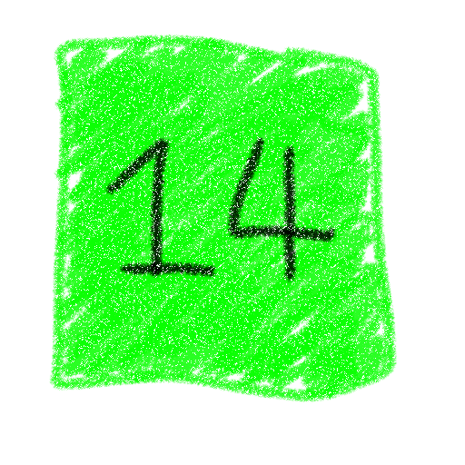
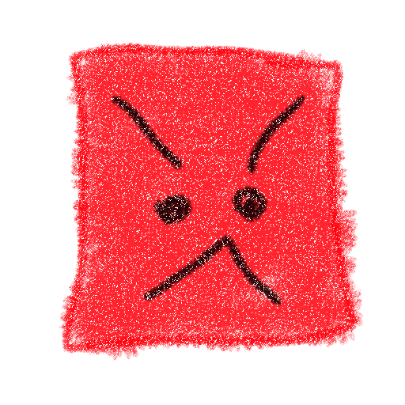
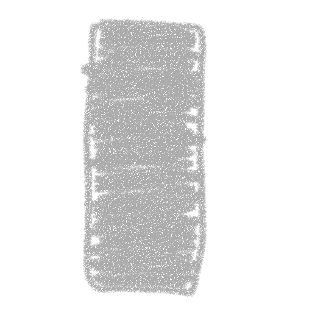
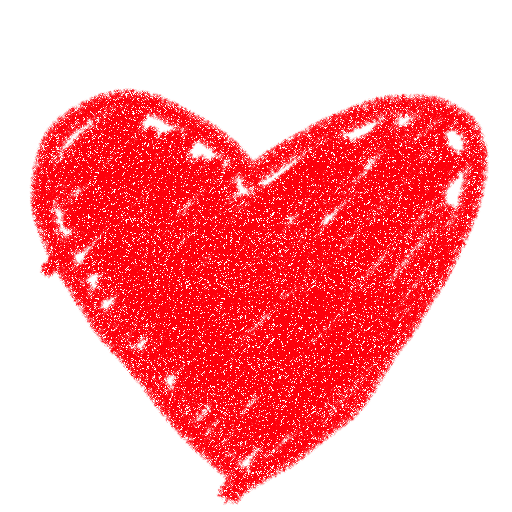
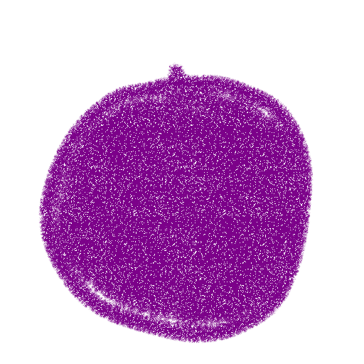

Help
Use WASD to move. The game will speed up every 4 attacks. Occassionally, you may run into Mix-Ups that change up how you play the game and add an extra challenge.
Sticker
After a brief windup, the sticker will persist in a place for an amount of time. Running into it will damage you.

Mover
After a brief windup, the mover will move in the direction that its arrow is pointing at until it hits its respective wall. Running into it will also damage you.

Timer
When spawned, the timer will immediately start counting down. If you fail to run into it before the timer goes out, you will take damage.

Stalker
After a brief windup, the stalker will move towards you. You better start running. As always, running into it will damage you.

Sweeper
After a brief windup, the sweeper will encompass the whole row or column, persisting there for any amount of time. To no ones surprise, running into it will damage you.

Healing Heart
Every 10th attack, a heart will be spawned unto the field. It moves erratically and can move through hazards too. Collecting this heart will restore 1 health to you. You can have up to 10 Health at any given time.

Warps
If you hear a sort of charging sound, and you see a purple circle on the field, it means you're about to get warped. When the charging finishes you will be teleported to the purple square.
